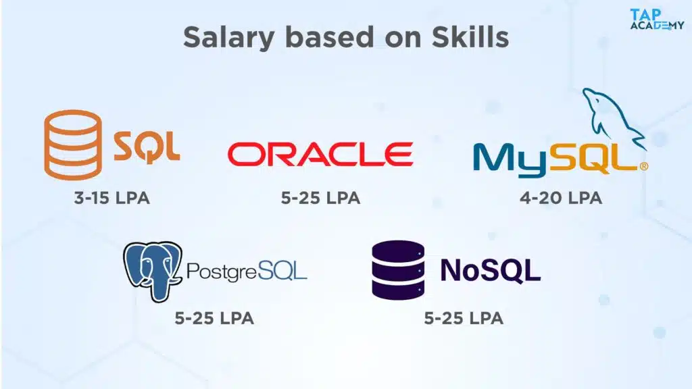

08069878321
08069878321
 hello@thetapacademy.com
hello@thetapacademy.com

 08069878321
hello@thetapacademy.com
08069878321
hello@thetapacademy.com

Most engineering professionals and graduates are frequently unsure of the salary they need to demand from potential companies. Here, we’ve attempted to accurately represent the salary you can anticipate based on a variety of circumstances. These are only estimates; your ability to perform the task deftly and intelligently will determine your actual salary.
Databases are key parts of contemporary information systems, and database developers are essential to their design, development, and maintenance. Large volumes of data are stored in databases, which are used by corporations and other organisations to support their operations and make informed choices. Data would be chaotic, inaccessible, and challenging to maintain without professional database developers, which would result in major inefficiencies and errors in data processing.
They make sure that data is organised, accessible, and secure, all of which are essential for promoting innovation, enhancing productivity, and making well-informed business decisions. Without skilled database developers, businesses would find it difficult to handle their data efficiently, which could result in serious inefficiencies and data breaches.
There is currently a strong need for skilled database developers in India, where the work situation for these individuals is favourable. The demand for effective and well-designed databases is rising as businesses rely more and
One of the main employers of database developers in India is the IT industry, which employs a huge number of software development companies, technology consulting organisations, and multinational corporations. In addition, a growing number of Indian businesses in industries including healthcare, banking, retail, and education need database developers to handle their data and information systems.
It is also highly valued to have knowledge of well-known database management systems like Oracle, MySQL, and Microsoft SQL Server. Additionally, knowledge of cutting-edge technologies like cloud computing, big data, and artificial intelligence might provide job seekers a substantial advantage.
In India, salaries for database developers can range from INR 3 lakhs to INR 15 lakhs annually, depending on expertise level and industry sector. These salaries are typically regarded as competitive.
Depending on the business, industry, and work role, different skills and qualifications may be needed for a database developer.
When it comes to the education needed to become a Database developer, an ideal candidate should have a bachelor’s degree in computer science, information technology, or a related discipline, which is often required. However, in recent years after the pandemic, candidates with skills in databases, but without a computer engineering degree, are directly competing with those who have one in the race to find a job as a database developer. So, you do not need to have a degree in computer science to get into the IT industry in today’s era where skills dominate degrees.
With a rising need for skilled staff in fields like software development, cloud computing, artificial intelligence, and data analytics, the IT sector continues to be a significant employer in India.
Digital marketing, e-commerce operations, and financial technology are just a few of the fields seeing new job opportunities as a result of the e-commerce and fintech sectors' explosive expansion.
Several firms now provide work-from-home opportunities to attract and keep talent as remote work and flexible work schedules gain popularity.
The number of startups and small enterprises is increasing, and many businesspeople are starting new projects in sectors including agri-tech, health tech, and ed-tech.
Database developers' salary in India varies according to expertise level, industry, location, and company size. Generally speaking, pay for database developers in India can range from INR 3 lakhs to INR 15 lakhs annually and are thought to be competitive.
Database developers often make more money in larger cities like Bangalore, Mumbai, and Delhi than they do in rural areas.

There are certain micro and macro-level factors that affect the salary of a database developer.
The typical salary for a database developer in India in 2020 ranged from INR 500,000 to INR 900,000 per year, based on experience level and industry, according to several sources, including Payscale and Glassdoor.
The average salary for database developers in India has increased slightly in 2021, with some studies estimating a rise of between 5% and 10%. The rise in demand for database management and data analysis capabilities across businesses is credited with this rise.
It's crucial to remember that compensation trends can differ significantly depending on a variety of factors, including region, firm size, sector, and amount of expertise. Salary may potentially be affected by the COVID-19 pandemic's effects on the labor market.
In the upcoming years, it is anticipated that the database industry will expand steadily. Market research estimates from a variety of sources, including ResearchAndMarkets and MarketsandMarkets, predict that the global database management system (DBMS) market will expand between 2021 and 2026 at a compound annual growth rate (CAGR) of about 9%.
This growth is mostly caused by the growing volume of data that businesses and organizations produce, which calls for efficient data management, storage, and analysis. The proliferation of Internet of things (IoT) devices, the growing demand for real-time data analytics, and the increasing usage of cloud-based database systems are all factors in the expansion of the database sector.
Depending on their level of experience, database developers' salaries in India can differ greatly. In general, a developer's income will probably increase as they gain more experience. Based on experience, the following is a preliminary estimation of database developers' salaries in India:
Depending on where they work, database developers in India can earn considerably different salaries. The following are some projected compensation ranges for database developers in significant Indian cities:
Depending on the sector they work in, database developers’ salaries in India can vary greatly. These are some ballpark salary ranges for database developers across several Indian industries:
In India, a database developer’s salary can vary greatly depending on their particular qualifications and expertise. According to their qualifications, the following are some suggested compensation ranges for database developers:
According to various well-known firms, the following are the projected salary ranges for database developers in India:
Due to the growing demand for data management and analysis across numerous industries, there are anticipated to be more job possibilities for database developers in India in the years to come. The following list of top sectors and potential career paths for database developers:
Big Data: Due to the rising volume of data that businesses and organizations are producing, there is an increased need for database engineers that are able to manage and analyze enormous amounts of data utilizing big data technologies like Hadoop, Spark, and NoSQL databases.
Cloud Computing: Database developers who can design, implement, and maintain cloud-based databases and applications are needed as more businesses shift their data and services to the cloud.
Health Care: Patient records, scientific research, and clinical trials all contribute to the enormous amount of data that the healthcare sector produces. To handle and analyze this data to enhance patient care and research, database developers are required.
Finance: A lot of information about investments, client transactions, and market trends is produced by the financial sector. To manage this data and deliver insights that can aid in making wise judgments, database developers are required.
E-commerce: To manage massive amounts of client data and increase the effectiveness of online transactions, India's e-commerce sector needs database engineers.
A thorough knowledge of database structure, data modeling, and database management systems is essential for a database developer. Also, they must be proficient in a variety of programming languages, including Python, Java, and SQL.